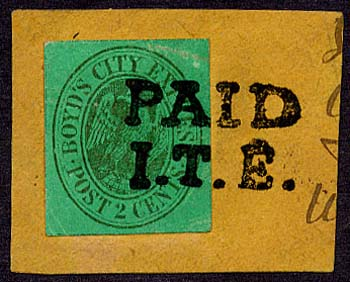
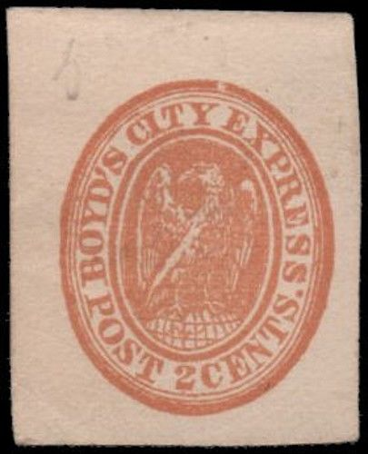
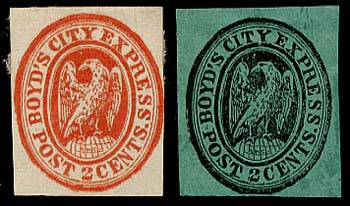
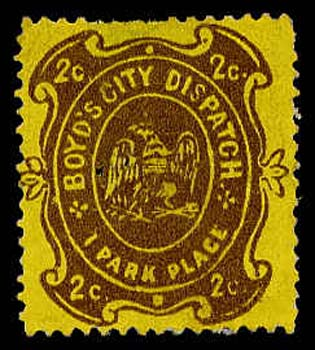
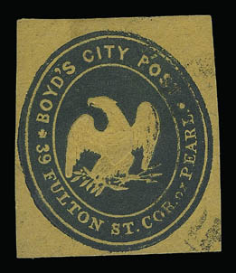
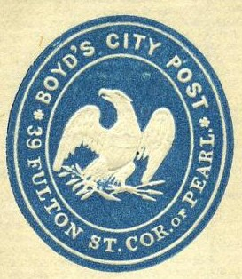
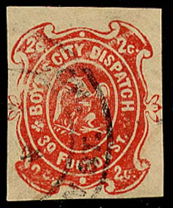

Return To Catalogue - Other local issues, overview - United States
Note: on my website many of the
pictures can not be seen! They are of course present in the cd's;
contact me if you want to purchase the catalogue.

I know that forgeries/ reprints have been made by at least two forgers: Scott and Taylor. I'm only certain that the above stamps are genuine. There are also many types of the genuine stamps.
(on letter, note the cancel 'PAID JTB')

Reprint.
Forgeries:
Forgeries made by Scott:

Forgeries
7 c forgery
Highly dubious item.
With inscription "2c":

Genuine stamps
(Reduced size)
Without any value indication:
This stamp also exists with the adress "1 PARK PLACE" erased (made from envelopes):
Genuine stamps
Two very dubious items with "39 FULTON ST."; the first
one has a larger inscription and the second one a very 'pale'
eagle.
Three different "39 FULTON ST." types.
(Boyd's Dispatch 1 Park Place)
Several sub-types of this stamp exist.

I've been told that this is a tete-beche reprint of a Boyd's City Post envelope made by Scott, I have no further information at this moment:
Scott reprints, reduced sizes

Scott reprint
Another reprint:
(Another reprint)
Forgery, the text 'FULTON' is placed lower
Dubious item.

(Genuine)
There are three types of the above envelopes: 1) with inscription '39 FULTON ST.', 2) with the adress erased and 3) with inscription 'No1 PARK PL'.
What is this?
(Inscription 'Delivered by BOYD'S CITY DESPATCH NEW YORK')
{kind=link}
{kind=link}
{kind=link}
{kind=link}
{kind=link}
{kind=link}